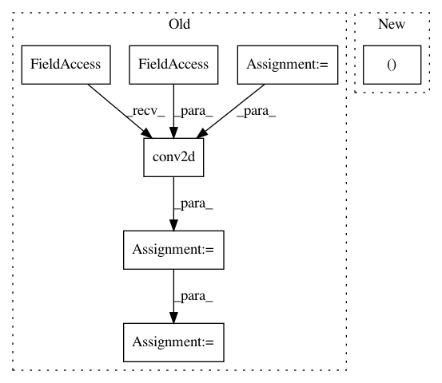

134d00c07c5f2bfb6e79811e9397e5a111635f91,art/attacks/spatial_transformation_unittest.py,TestSpatialTransformation,test_tfclassifier,#TestSpatialTransformation#,230
Before Change
// Build a TFClassifier
// Define input and output placeholders
input_ph = tf.placeholder(tf.float32, shape=[None, 28, 28, 1])
output_ph = tf.placeholder(tf.int32, shape=[None, 10])
// Define the tensorflow graph
conv = tf.layers.conv2d(input_ph, 1, 7, activation=tf.nn.relu, kernel_initializer=tf_initializer_w_conv2d,
bias_initializer=tf_initializer_b_conv2d)
conv = tf.layers.max_pooling2d(conv, 4, 4)
flattened = tf.contrib.layers.flatten(conv)
// Logits layer
logits = tf.layers.dense(flattened, 10, kernel_initializer=tf_initializer_w_dense,
bias_initializer=tf_initializer_b_dense)
// Train operator
loss = tf.reduce_mean(tf.losses.softmax_cross_entropy(logits=logits, onehot_labels=output_ph))
// Tensorflow session and initialization
sess = tf.Session()
sess.run(tf.global_variables_initializer())
After Change
:return:
// Build TF model
loss, logits, input_ph, output_ph = get_model_tf()
// Tensorflow session and initialization
sess = tf.Session()
In pattern: SUPERPATTERN
Frequency: 3
Non-data size: 7
Instances
Project Name: IBM/adversarial-robustness-toolbox
Commit Name: 134d00c07c5f2bfb6e79811e9397e5a111635f91
Time: 2019-02-11
Author: beat.buesser@ie.ibm.com
File Name: art/attacks/spatial_transformation_unittest.py
Class Name: TestSpatialTransformation
Method Name: test_tfclassifier
Project Name: keras-team/keras
Commit Name: ab75f215b6d65704e7272e0a411d9d082c029846
Time: 2015-08-13
Author: cheng.guo.work@gmail.com
File Name: keras/layers/convolutional.py
Class Name: Convolution2D
Method Name: get_output
Project Name: tensorlayer/tensorlayer
Commit Name: d79992cfd669974296a34d861060c921a8b12d9f
Time: 2018-12-05
Author: dhsig552@163.com
File Name: tensorlayer/layers/convolution/expert_conv.py
Class Name: Conv2dLayer
Method Name: __init__